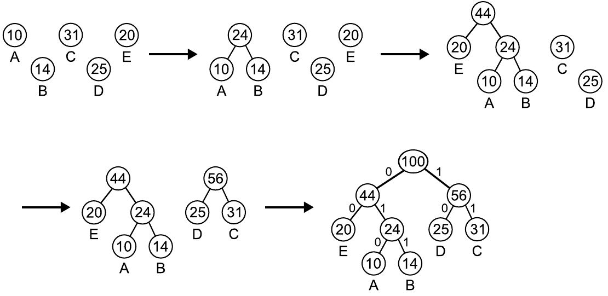

ICPC World Finals 2008 · Problem E
Dan McAmbi is a member of a crack counter-espionage team and has recently obtained the partial contents of a file containing information vital to his nation’s interests. The file had been compressed using Huffman encoding. Unfortunately, the part of the file that Dan has shows only the Huffman codes themselves, not the compressed information. Since Huffman codes are based on the frequencies of the characters in the original message, Dan’s boss thinks that some information might be obtained if Dan can reverse the Huffman encoding process and obtain the character frequencies from the Huffman codes. Dan’s gut reaction to this is that any given set of codes could be obtained from a wide variety of frequency distributions, but his boss is not impressed with this reasoned analysis. So Dan has come to you to get more definitive proof to take back to his boss.
Huffman encoding is an optimal data compression method if you know in advance the relative frequencies of letters in the text to be compressed. The method works by first constructing a Huffman tree as follows. Start with a forest of trees, each tree a single node containing a character from the text and its frequency (the character value is used only in the leaves of the resulting tree). Each step of the construction algorithm takes the two trees with the lowest frequency values (choosing arbitrarily if there are ties), and replaces them with a new tree formed by joining the two trees as the left and right subtrees of a new root node. The frequency value of the new root is the sum of the frequencies of the two subtrees. This procedure repeats until only one tree is left. An example of this is shown below, assuming we have a file with only 5 characters – A, B, C, D and E – with frequencies 10%, 14%, 31%, 25% and 20%, respectively.

After you have constructed a Huffman tree, assign the Huffman codes to the characters as follows. Label each left branch of the tree with a 0 and each right branch with a 1. Reading down from the root to each character gives the Huffman code for that character. The tree above results in the following Huffman codes: A - 010, B - 011, C - 11, D - 10 and E - 00.
For the purpose of this problem, the tree with the lower frequency always becomes the left subtree of the new tree. If both trees have the same frequencies, either of the two trees can be chosen as the left subtree. Note that this means that for some frequency distributions, there are several valid Huffman encodings.
The same Huffman encoding can be obtained from several different frequency distributions: change 14% to 13% and 31% to 32%, and you still get the same tree and thus the same codes. Dan wants you to write a program to determine the total number of distinct ways you could get a given Huffman encoding, assuming that all percentages are positive integers. Note that two frequency distributions that differ only in the ordering of their percentages (for example 30% 70% for one distribution and 70% 30% for another) are not distinct.
The input consists of several test cases. Each test case consists of a single line starting with a positive integer n (2 ≤ n ≤ 20), which is the number of different characters in the compressed document, followed by n binary strings giving the Huffman encoding of each character. You may assume that these strings are indeed a Huffman encoding of some frequency distribution (though under our additional assumptions, it may still be the case that the answer is 0 – see the last sample case below).
The last test case is followed by a line containing a single zero.
For each test case, print a line containing the test case number (beginning with 1) followed by the number of distinct frequency distributions that could result in the given Huffman codes.
5 010 011 11 10 00 8 00 010 011 10 1100 11010 11011 111 8 1 01 001 0001 00001 000001 0000001 0000000 0
Case 1: 3035 Case 2: 11914 Case 3: 0